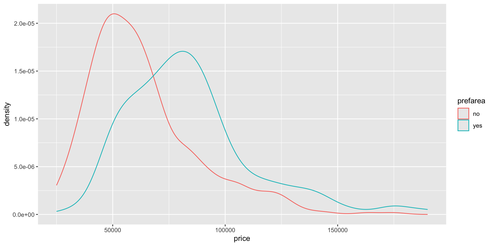

library(Ecdat)
library(tidyverse)
Housing <- Housing[, c(1:3, 10, 11:12)]# her velger vi ut søylene 1,2,3,10,11,12
#View(Housing) kikker litt på dataeneR for samling 1
Forelesningen
Housing dataene
Vi må installere noen pakker og da får vi Housing datafilen gjennom pakken Ecdat.
Histogram for pris
Enten bruker vi base R eller den mer kraftige pakken ggplot som vi fikk via tidyverse.
Stolpediagram for preferred area
Stolpediagram for preferred area:
#ggplot
ggplot(Housing, aes(prefarea))+geom_bar()Separere på preferreed area og se på fordelingene
ggplot(Housing, aes(price, color=prefarea))+geom_density()
Alder
age <- c(16, 56, 58, 67, 62,69)KRYSSTABELL
table(Housing$airc, Housing$prefarea)
no yes
no 298 75
yes 120 53spredningsdiagram
ggplot(Housing, aes(lotsize,price))+geom_point()Korrelasjon
x <- c(-5 , 10 , 15 , 31 , 42)
y <- c( 3 , 3 , 0 , 1 , -1)
cor(x, y)[1] -0.82#base R
plot(x,y)#ggplot
ggplot(data.frame(x,y), aes(x,y))+geom_point(size=3)Cornflakes
vekt <- c(502, 498, 479, 492, 488, 494, 494)
t.test(vekt, mu=500)
One Sample t-test
data: vekt
t = -2.7105, df = 6, p-value = 0.03508
alternative hypothesis: true mean is not equal to 500
95 percent confidence interval:
485.5935 499.2636
sample estimates:
mean of x
492.4286 Quiz
Oppgave 13
alder <- c(20, 20, 19, 23, 29, 27, 25, 21)#legge inn i vektor
sd(alder)[1] 3.664502Oppgave 24
timer <- c(23, 55, 60, 70, 65 , 60)
sd(timer)[1] 16.71825Oppgave 27
prop.test(x=26, n=240)
1-sample proportions test with continuity correction
data: 26 out of 240, null probability 0.5
X-squared = 145.7, df = 1, p-value < 2.2e-16
alternative hypothesis: true p is not equal to 0.5
95 percent confidence interval:
0.0732806 0.1563674
sample estimates:
p
0.1083333 Oppgave 28
prop.test(x=28, n=56, conf.level=.9)#stemmer!
1-sample proportions test without continuity correction
data: 28 out of 56, null probability 0.5
X-squared = 0, df = 1, p-value = 1
alternative hypothesis: true p is not equal to 0.5
90 percent confidence interval:
0.392661 0.607339
sample estimates:
p
0.5 Oppgave 30
One Sample t-test
data: alder
t = 9.5681, df = 5, p-value = 0.0002112
alternative hypothesis: true mean is not equal to 0
95 percent confidence interval:
29.61922 51.38078
sample estimates:
mean of x
40.5 Oppgave 31
pinge <- read.csv("agePingelab.csv")
alder <- pinge[, 1]# bare en søyle, vi velger denne.
mean(alder)[1] 41.16667Oppgave 32
t.test(alder)
One Sample t-test
data: alder
t = 20.769, df = 59, p-value < 2.2e-16
alternative hypothesis: true mean is not equal to 0
95 percent confidence interval:
37.20040 45.13293
sample estimates:
mean of x
41.16667 Oppgave 42
oppmøte <- c( 2 , 15 , 8 , 14, 8 , 12 , 13 , 2 , 5, 4 )
poeng <- c( 13 , 26, 20 ,27, 16, 24 , 20, 11 , 16, 20)
plot(oppmøte, poeng)
Oppgave 44
reg <- lm(oppmøte~ poeng)
summary(reg)
Call:
lm(formula = oppmøte ~ poeng)
Residuals:
Min 1Q Median 3Q Max
-4.8698 -0.8058 -0.3470 1.0486 4.1302
Coefficients:
Estimate Std. Error t value Pr(>|t|)
(Intercept) -7.4107 3.1388 -2.361 0.045887 *
poeng 0.8140 0.1573 5.176 0.000847 ***
---
Signif. codes: 0 '***' 0.001 '**' 0.01 '*' 0.05 '.' 0.1 ' ' 1
Residual standard error: 2.527 on 8 degrees of freedom
Multiple R-squared: 0.77, Adjusted R-squared: 0.7413
F-statistic: 26.79 on 1 and 8 DF, p-value: 0.0008471